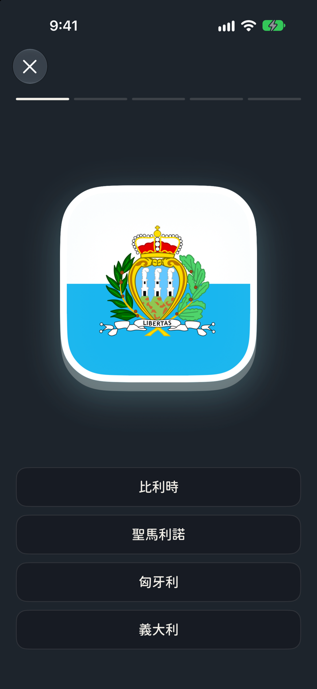
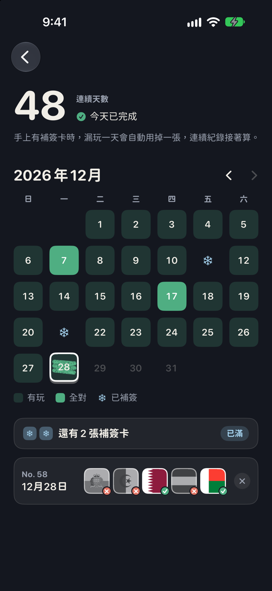
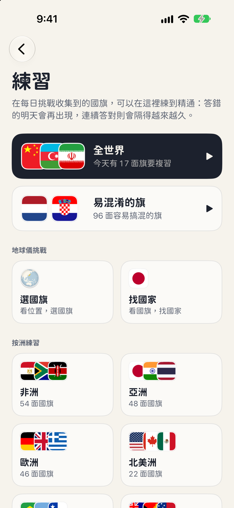
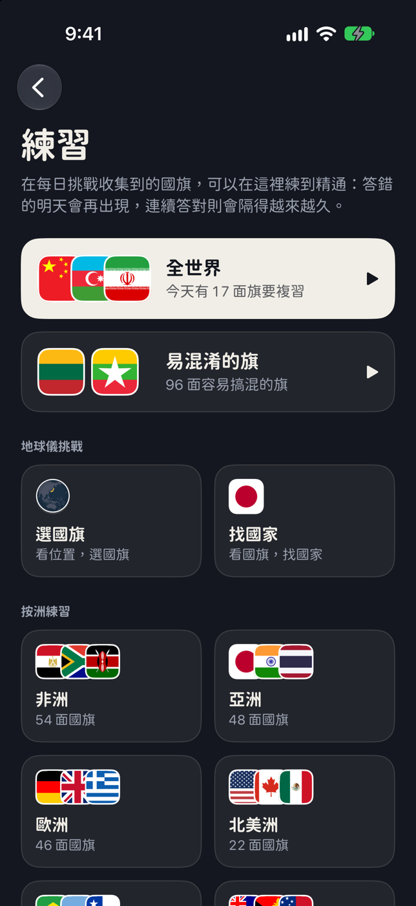

01 · 每日五題
一分鐘，猜五面國旗
看國旗，從四個選項猜是哪個國家，選完馬上揭曉答案。
- 每天換一組新題目
- 答對後，還能看看這面旗背後的故事
- 答錯時，兩面旗會並排顯示，一眼就能看出差在哪


02 · 收集冊與地球儀
看著地球儀慢慢亮起來
在每日挑戰猜對的國旗會收進收集冊，地球儀也會跟著亮起來。轉一轉，看看你已經認得哪些國家的旗。
- 197 面國旗等你收集
- 每洲都有自己的收集冊
- 拖曳轉動、雙指縮放，還能點選國家

03 · 連續天數
有補簽卡，漏玩也不會斷
連續七天答完每日五題，就能拿到一張補簽卡。手上有卡的話，漏玩一天時會自動用掉一張，保住你的連續紀錄。
- 打開月曆，就能回顧哪天玩過
- 補簽卡最多存兩張
- 看你最長連續玩了幾天、總共玩了幾天、拿過幾次全對


04 · Unfurl Plus
隨時都能練習
每日五題一直免費。想多練幾輪，Plus 會依照你的答題表現安排複習，把收集到的國旗一面一面練到精通。
- 猜錯的旗優先複習，越熟的旗就隔越久再練
- 想練幾輪都可以。挑一洲來練，也能把 197 面旗混在一起練
- 也能專練容易搞混的旗
- 地球儀挑戰有兩種，看位置選國旗，或反過來拿著國旗找國家
一次買斷 · 不用訂閱


更多功能
兩面旗太像？放一起看
答錯時，Unfurl 會把你選的旗和正確答案並排，讓你看清楚差在哪。
iCloud 同步
換手機後，登入同一個 Apple 帳號，就能透過 iCloud 同步遊戲進度。
每日提醒
提醒時間自己選。今天的五題還沒答完，App 才會提醒你。
分享成績
用一排方塊或一張圖卡跟朋友分享今天的成績，讓他們也能自己猜，不會先看到答案。
淺色和深色模式
喜歡米白色還是深夜藍？可以跟著系統切換，也可以自己選。
繁體中文和英文
從操作介面、國名到國旗小知識，都有繁中和英文。
你的遊戲進度由你保管Unfurl 不收集使用分析資料。遊戲進度保存在手機上，登入 iCloud 後也能同步。